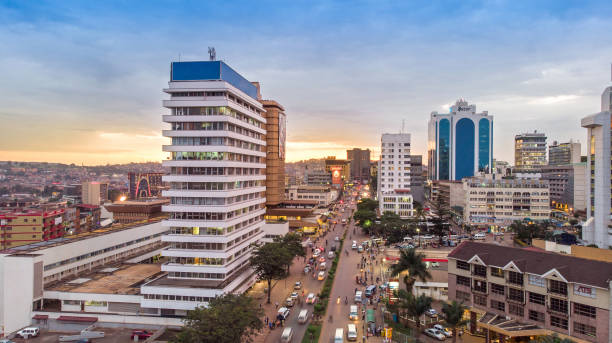

About Kampala
Kampala, Uganda’s capital, is a bustling city known for its hills, vibrant markets, and rich cultural heritage. It is home to nearly two million people and serves as the country's economic and political center.
The city offers a mix of traditional and modern experiences — from historic sites like the Kasubi Tombs to lively nightlife and diverse cuisine. Kampala is also the gateway to Uganda's national parks and natural attractions.
Visitors can explore local crafts, attend music and dance performances, or simply enjoy the scenic views from hills like Old Kampala and Namirembe.